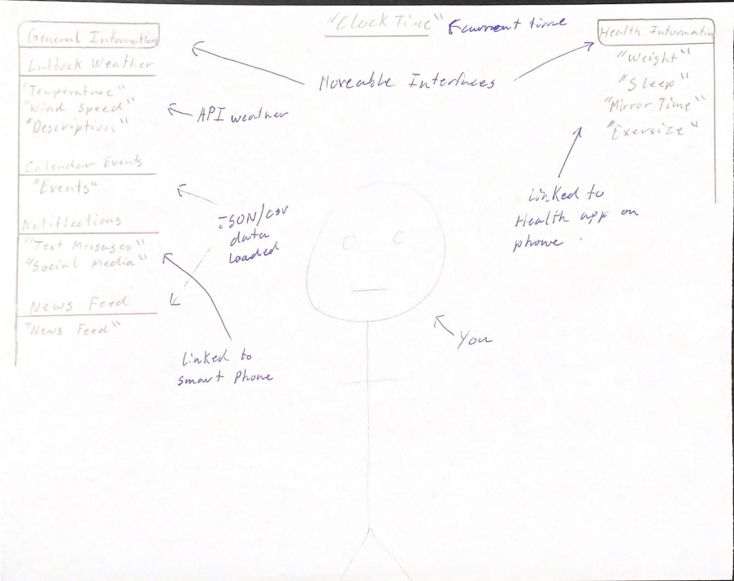

Grade C Requirements
Provided Sketch of the interface:

Both General Information and Health-Related Information are provided
Current time will be located in the top center.
The General Information will provide different information regarding weather, calendar events, text and social feed notifications, and news feed.
The Health-related Information also will include sleep, weight, exercise, and mirror time infomation.
The Weather information will pull from an online API to give live information to the user.
Both calendar and news feed will pull information from either JSON/CSV data.
The notifications and ALL health information will pull information from the users smart phone.